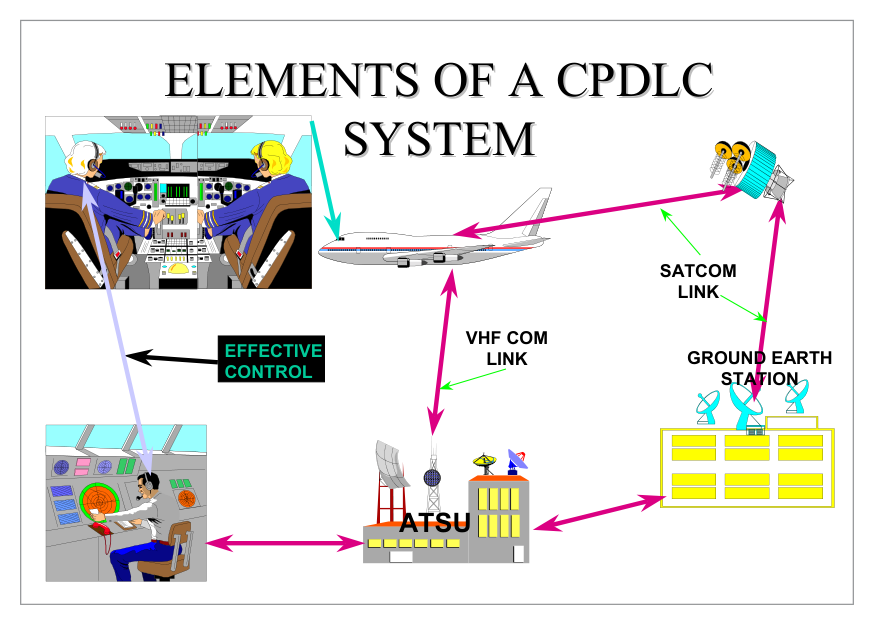
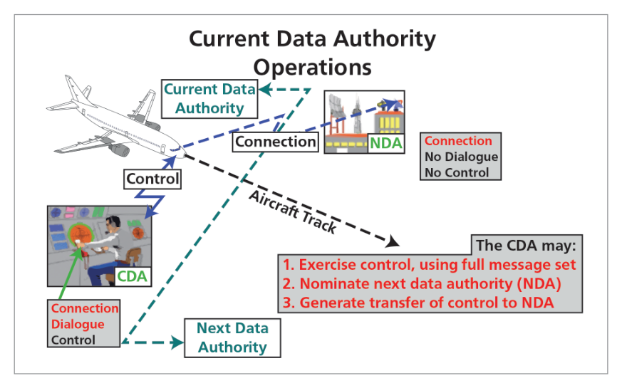
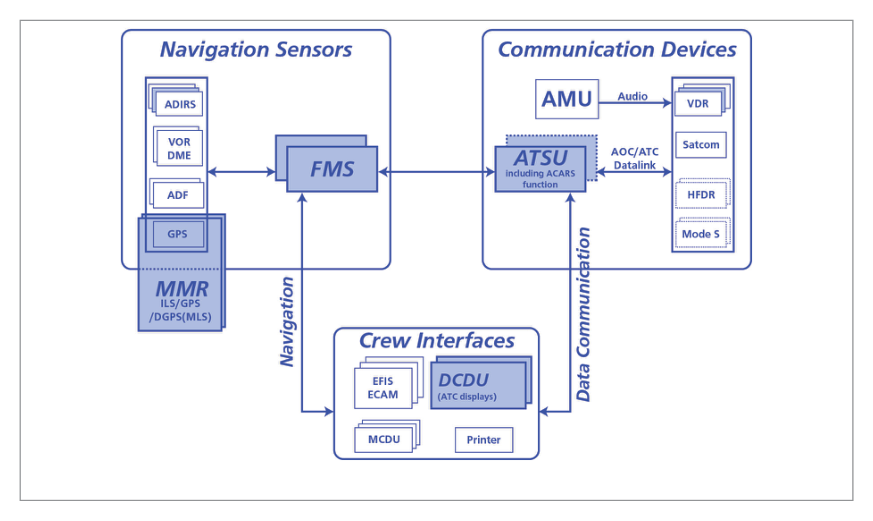

What this section covers: Why traditional voice-based ATC has limitations over oceanic/remote areas, and why a satellite-based integrated system became necessary.
Aircraft are currently controlled using voice communications. Over and close to populated landmasses, ATC uses radar with VHF communications. However, over oceans, deserts and polar regions, VHF and radar may not be available. ATC must provide a procedural control service using HF communications, resulting in high vertical, lateral and longitudinal separation distances and low traffic density.
Position reports are passed by aircraft crossing the North Atlantic every 10° of longitude up to 70°N and every 20° north thereof — meaning ATC receive a position update every 30–60 minutes.
Core Problem: Pilot rarely communicates directly with ATC controller over oceans — messages relayed via a third party using HF. Static interference, fading, and message repetition compound the problem. Large separation is required because position updates are infrequent and unreliable.
Advances in technology now provide:
GNSS — global satellite navigation providing position accuracy better than 1 NM
SATCOM — satellite communications providing potential for global communications through a single medium
FANS integrates these into a Seamless Global Air Traffic Management System.
Exam Tip: The 30–60 minute position update interval and the use of HF with a relay third party are key exam facts that illustrate why FANS was developed.
2. Communications Systems
What this section covers: The evolution from VHF/HF voice to SATCOM, and the disadvantages of voice communications.
Until the late 1980s, air-ground communications relied solely on VHF and HF voice. In the 1990s, voice was extended to SATCOM (UHF) via geostationary satellites. Coverage is limited to approximately 80° of latitude. Polar regions require satellites in lower-altitude inclined orbits.
Medium
Range
Quality
Key Limitation
VHF
Line of sight (~200 NM at FL300)
Good
Not available over oceans
HF
Long range (sky waves)
Poor
Static, fading, third-party relay, SELCAL needed
SATCOM (UHF)
Global to ~80° latitude
Good
No polar coverage; geostationary only
Disadvantages of Voice Communications (DGCA list):
Many aircraft on one frequency (congestion)
Synchronous transmission (only one transmits at a time)
Language confusion
Limited channels
VHF — line of sight only
HF — interference, tiring to listen to
3. Data Link
What this section covers: Data link definition, providers, airborne equipment, and UL/DL terminology.
A data link is a means of connecting one location to another for transmitting and receiving information. Data links may be established on any frequency but require additional equipment on both ground and aircraft.

Fig 24.2 — FANS A CPDLC system elements (source p.327)
Two Data Link Service Providers:
SITA — Société Internationale de Télécommunications Aéronautiques (France) — operates ATN (FANS B)
ARINC — Air Radio Incorporated (USA) — operates ACARS network (FANS A)
Uplink / Downlink Convention
Direction
Definition
Uplink (UL)
Transmission from earth station/ATSU to aircraft
Downlink (DL)
Transmission from aircraft to earth station/ATSU (even if aircraft is on the ground)
Memory Aid: "UP from the ground, DOWN from the aircraft." The aircraft's message is always the Downlink regardless of whether it is airborne or on the ground.
Airborne Data Link Equipment
Unit
Full Name
Function
CMU
Communications Management Unit
Selects frequencies for all radio equipment
DCDU
Data Communications Display Unit
Displays messages received/sent via data link
MCDU
Multi Control and Display Unit
Combination of CMU and DCDU
VISUAL
Attention Getters
Light & sound alert for incoming data link message
PRINTER
Hard Copy Output
Prints data link messages in cockpit
4. ACARS
What this section covers: ACARS — the first major aviation data link system, its evolution, and capabilities.
ACARS (Aircraft Communications Addressing and Reporting System) uses data link format to pass messages between the aircraft and ATC or aircraft operating companies using VHF. Messages can be printed out in the cockpit.
Extended to SATCOM in the early 1990s for oceanic flights
Extended to HF in 2001 to close the polar gap
FMS interfaces added in the 1990s — met info, alternate routes evaluated by FMS
Exam Tip — OOOI: "Out, Off, On, In" — the four flight-event reports automatically sent to the airline so they know where each aircraft is throughout its cycle.
7. Logon Procedure
What this section covers: How an aircraft connects to the CPDLC/FANS data link service via the ATS Facilities Notification (AFN).
flowchart LR
A["Pilot inputs 4-digit ICAO\nATSU address into FMS"] --> B["FMS sends Logon Message\n(aircraft address + capabilities)"]
B --> C["ATSU acknowledges\nlogon message"]
C --> D["ATSU sends Connection\nRequest to aircraft"]
D --> E["Aircraft sends Connection\nConfirm message"]
E --> F["AFN Complete\n(ATS Facilities Notification)"]
Manual Logon Required When:
First contact with the ATSU on the ground
Entering a CPDLC area from a non-CPDLC area
Any interruption to the service (link broken)
Once established, automatic transfer to subsequent CPDLC-capable ATSUs.
Direction Convention — Critical: Aircraft → ATSU = Downlink (DL). ATSU → Aircraft = Uplink (UL). This applies even when the aircraft is on the ground.
8. FANS A — Oceanic / Remote Airspace
What this section covers: FANS A components — AFN, ADS-C, and CPDLC.
FANS A provides a CNS system and ADS. Used over oceanic and remote airspace, transmitted over the ACARS network (ARINC). Communications use current HF/VHF frequencies; GNSS provides the navigation input for surveillance.

Fig 24.3 — FANS A CPDLC architecture (source p.328)

Fig 24.4 — Typical FANS A architecture (source p.328)
FANS A Components
AFN — ATS Facility Notification
A contact message initiated by aircrew or automatic aircraft trigger. If acknowledgement is not received within a pre-set time, or there is an erroneous reply, an error message is displayed to the aircrew.
Controller-set contract with the aircraft's FMS, without any pilot input. The flight crew have no workload associated with setup.
Contract Type
Description
Periodic
Position reports at regular time intervals
On Demand
ATSU requests a single position report
On Event
Aircraft reports when specific event occurs (e.g., waypoint passage)
Emergency Mode
High-rate reporting during declared emergency
Critical Rule: Only the flight crew can declare and cancel ADS-C emergency reporting. The aircraft cannot initiate a contract itself.
CPDLC — Controller Pilot Data Link Communications
CPDLC permits data link messages for all stages of flight. Fixed-format messages activated by ATC controller or pilot. Messages annotated whether a response is required. An unanswered message (e.g. "report levelling at FL310") remains open until the FMS sends the automatic response.
What this section covers: FANS B differences from FANS A, and the ATN.
FANS B is very similar to FANS A but operates within high density airspace with good VHF coverage. Operates over the Aeronautical Telecommunications Network (ATN), operated by SITA. The ATN allows ground/ground, ground/air and avionic data subnetworks to interoperate.
Memory Aid: FANS A = ARINC = Aceanic. FANS B = Busy/high density = SITA/ATN.
10. Useful Abbreviations
Abbreviation
Full Form
ACARS
Aircraft Communications Addressing and Reporting System
ADS / ADS-C
Automatic Dependent Surveillance / Contract
AFN
Air Traffic Facilities Notification
AOC
Airline Operational Centre
ARINC
Air Radio Incorporated (USA)
ATM
Air Traffic Management
ATN
Aeronautical Telecommunications Network
ATSU
Air Traffic Service Unit
CNS
Communication, Navigation and Surveillance
CPDLC
Controller Pilot Data Link Communications
D-ATIS
Data Link Air Terminal Information Service
DCDU
Data Link Control and Display Unit
DCL
Departure Clearance
FANS A
Data Link Package for Oceanic/Remote airspace (ARINC/ACARS)
FANS B
Data Link Package for High Density airspace (SITA/ATN)
MCDU
Multi-function Control and Display Unit
OCL
Oceanic Clearance
OOOI
Out of gate, Off the ground, On the ground, In the gate
SITA
Société Internationale de Télécommunications Aéronautiques (France)
VDL2
VHF Data Link Mode 2
Quick Revision Summary — Chapter 24:
FANS solves oceanic ATC limitations: no radar/VHF → procedural control, 30–60 min updates, HF relay
Data link overcomes voice disadvantages: digital, non-synchronous, printable
FANS A (ARINC/ACARS) = oceanic; FANS B (SITA/ATN) = high-density continental
OOOI = Out, Off, On, In — AOC flight event messages
Downlink = aircraft to ATSU; Uplink = ATSU to aircraft (even on ground)
ADS-C: controller sets contract, crew only declare/cancel emergency mode
SATCOM coverage limited to ±80° latitude; HF added to ACARS for polar in 2001
AFN = logon process: manual first time, then automatic handoff to next ATSU
Practice Questions & Detailed Answers
Instructor-generated questions in DGCA CPL/ATPL examination style.
Q1.What is the primary limitation of ATC over oceanic regions that FANS is designed to overcome?
Excessive radar coverage requiring too many controllers
Lack of VHF/radar leading to procedural separation and infrequent position updates
Overloading of SATCOM frequency bands
Pilot inability to communicate in English
Correct Answer: (b)
Explanation: Over oceans, deserts and polar regions, VHF (line-of-sight) and radar are unavailable. ATC must provide procedural service using HF, resulting in large separations and position reports only every 30–60 minutes. FANS solves this with GNSS position accuracy and satellite data links for real-time communication. See Section 1.
Why other options are wrong:
(a) Oceanic areas have too few controllers due to communication difficulty — the opposite of this option.
(c) SATCOM band congestion is not the described problem.
(d) Language confusion is a minor voice comms disadvantage, not the primary oceanic limitation.
Instructor's Note: The 30–60 minute update interval is the key figure that underscores the urgency of FANS development.
Q2.FANS A operates over which network and is it operated by whom?
ATN, operated by SITA
ACARS network, operated by ARINC
SATCOM network, operated by INMARSAT
VHF Data Link Mode 2, operated by Eurocontrol
Correct Answer: (b)
Explanation: FANS A is designed for oceanic and remote airspace and is transmitted over the ACARS network operated by ARINC (USA). FANS B uses the ATN operated by SITA. See Section 8 and Section 9.
Why other options are wrong:
(a) ATN/SITA is FANS B (high density), not FANS A.
(c) INMARSAT is a SATCOM provider but not the network name for FANS A.
(d) VDL2 is a data link medium, not the FANS A network.
Instructor's Note: FANS A = ARINC/ACARS/Oceanic. FANS B = SITA/ATN/Continental. This distinction is a classic exam question.
Q3.What does OOOI stand for?
On Approach, On Descent, On Instruments, In Cloud
Out of gate, Off the ground, On the ground, In the gate
Over ocean, Over obstacle, On ILS, Inside marker
On track, Off track, On altitude, Inside airspace
Correct Answer: (b)
Explanation: OOOI messages are the four key flight event reports sent automatically to the AOC via data link, allowing the airline to track each aircraft through its full cycle. See Section 6.
Why other options are wrong:
(a), (c), (d) — Fictitious mnemonics not associated with ACARS/AOC terminology.
Instructor's Note: OOOI reports are also used by maintenance to track engine cycles and aircraft utilization.
Q4.Regarding ADS-C, which statement is correct?
The aircraft automatically initiates all ADS-C contracts without crew input
The controller sets up the contract; flight crew have no associated workload
The pilot must manually update ADS-C position every 10 minutes
ADS-C emergency mode can be declared by either the ATSU or the flight crew
Correct Answer: (b)
Explanation: ADS-C is a controller-set contract with the aircraft's FMS. The controller establishes all contract parameters without any pilot input — flight crew have zero workload. See Section 8.
Why other options are wrong:
(a) The aircraft cannot initiate a contract; it only responds to controller-initiated ones.
(c) Manual updates are not required; the system is fully automatic.
(d) Only flight crew can declare/cancel ADS-C emergency reporting — not the ATSU.
Instructor's Note: The exclusive flight-crew control of ADS-C emergency mode declaration is a specific DGCA exam point.
Q5.A message transmitted from an aircraft to the ATSU while the aircraft is still on the ground is called a:
Uplink, because the aircraft is below the satellite
Downlink, because the convention is aircraft-to-ATSU regardless of aircraft position
Ground link, a special category for ground operations
Uplink, because messages from aircraft always go upward
Correct Answer: (b)
Explanation: In FANS/CPDLC, aircraft-to-ATSU messages are always called Downlink (DL) and ATSU-to-aircraft messages are always Uplink (UL). This is a fixed convention that applies even when the aircraft is on the ground. See Section 7.
Why other options are wrong:
(a) The satellite position is irrelevant to the DL/UL naming convention in CPDLC.
(c) There is no "ground link" category in FANS terminology.
(d) "Upward from aircraft" is a physical description, not the convention used — this confuses physical direction with the CPDLC naming rule.
Instructor's Note: The "even if on the ground" qualifier is the classic trick in this type of question.
Q6.At what approximate latitude does geostationary SATCOM coverage become unreliable?
Above FL350 at any latitude
Beyond approximately 80° of latitude (polar regions)
When aircraft exceeds Mach 0.85
Below 10,000 ft altitude
Correct Answer: (b)
Explanation: Geostationary satellites orbit above the equator. Their coverage is limited to approximately 80° of latitude. Polar regions (beyond 80°) require satellites in lower-altitude inclined orbits to provide coverage. See Section 2.
Why other options are wrong:
(a) Altitude/FL has no impact on SATCOM latitude coverage limits.
(c) Mach number is completely irrelevant to SATCOM satellite geometry.
(d) Low altitude does not affect the latitude coverage of geostationary satellites.
Instructor's Note: This is why HF was added to ACARS in 2001 and why lower-orbit satellite constellations (LEO) are being developed for polar aviation.